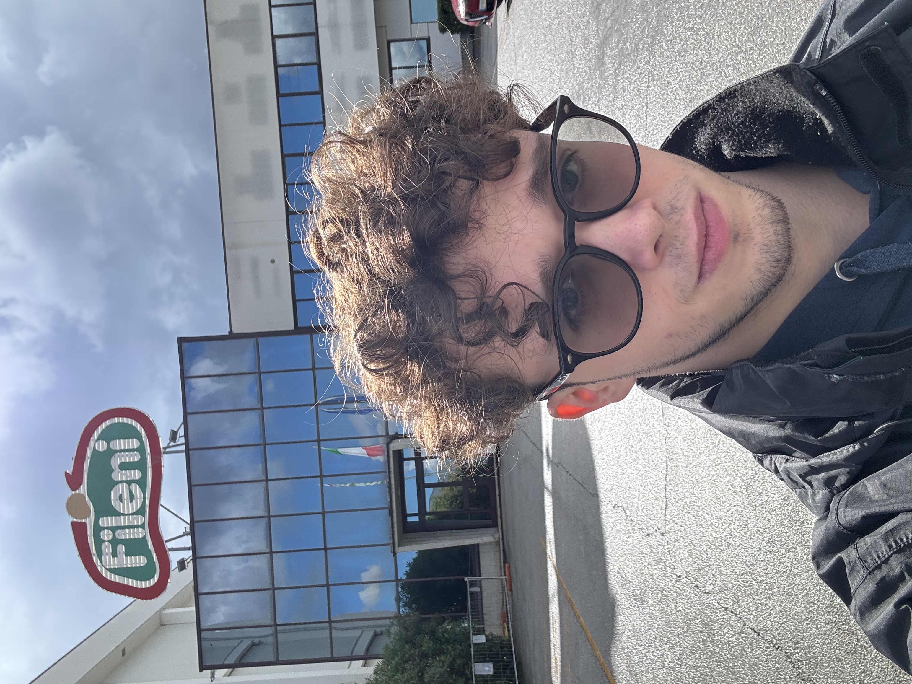
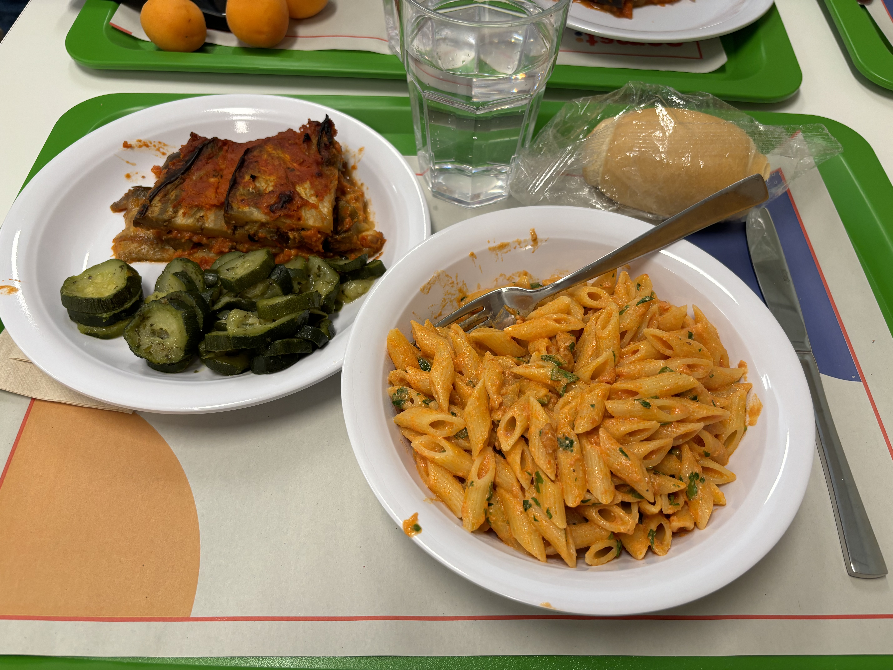

.png)
Chi Sono
Mi chiamo Luciano Arsene e sono uno studente del 5CM, entusiasta di condividere con voi un po' del mio percorso e delle mie passioni. Sono profondamente appassionato di tecnologia e, come molti di voi, sono sempre alla ricerca di nuove conoscenze e sfide da affrontare. Questo portfolio digitale che ho creato è molto più di una semplice raccolta di lavori: è il racconto della mia crescita, delle mie esperienze e del mio costante desiderio di imparare. Spero che esplorandolo possiate cogliere l'impegno e la curiosità che mi guidano ogni giorno.
Percorso per le Competenze Trasversali e l'Orientamento (PCTO)
Primo Periodo: Maggio - Giugno
Il mio percorso PCTO si è svolto in due periodi : dal 21 maggio al 9 giugno e, successivamente, dal 12 al 22 settembre. Ho svolto il tirocinio presso l'azienda Fileni , un'importante realtà italiana del settore alimentare, leader nella produzione di carne e pollame biologici, con sede a Cingoli (MC).
Sono stato inserito nel reparto assistenza informatica , sotto la supervisione del mio tutor aziendale Massimiliano. Durante il primo periodo, mi sono occupato della configurazione di tre PC destinati a nuovi dipendenti, imparando l'importanza della precisione, della metodologia e del rispetto delle procedure aziendali. Inoltre, ho installato Windows 11 sul mio computer personale, migliorando la mia conoscenza del sistema operativo e delle sue funzionalità. Ho avuto anche l'opportunità di accedere alla sala server , esperienza utile per comprendere come funziona un'infrastruttura informatica in un contesto aziendale reale.

Secondo Periodo: Settembre
Nel secondo periodo, le mie attività si sono concentrate maggiormente sul lavoro con i database. In particolare, ho utilizzato SQL per creare e gestire un database di prova, esercitandomi in vista delle attività scolastiche. Questo mi ha permesso di unire la teoria appresa in classe con un contesto pratico, rendendo più chiaro il valore della gestione dei dati nel mondo del lavoro.
Osservazioni Personali e Difficoltà
L'esperienza è stata molto formativa sia dal punto di vista tecnico che personale. Ho potuto osservare da vicino il funzionamento di un'azienda strutturata e conoscere il lavoro di squadra, l'importanza della puntualità, della comunicazione e dell'adattamento. Tuttavia, ho incontrato alcune difficoltà logistiche... Nonostante le piccole difficoltà, considero il mio PCTO estremamente positivo.
I Miei Hobby
Tecnologia
Sono affascinato dal mondo della tecnologia, dalle ultime innovazioni software e hardware all'intelligenza artificiale e allo sviluppo web.
Macchine
Ho una grande passione per le automobili, il loro design, la loro ingegneria e le prestazioni. Mi piace mantenermi aggiornato sulle novità del settore.
Sport
Lo sport è una parte importante della mia vita, mi aiuta a mantenermi in forma e a scaricare lo stress. Apprezzo sia la pratica che l'osservazione di diverse discipline.